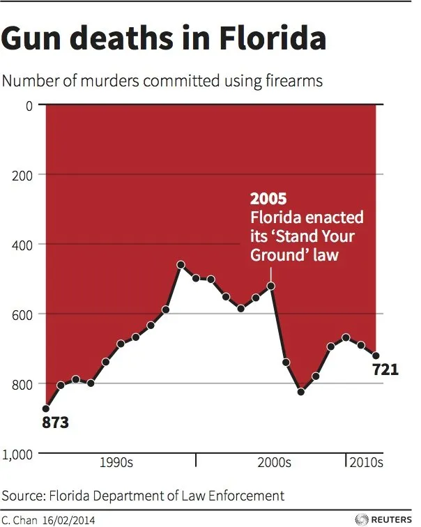

La Trampa de la Percepción: Cuando el Diseño Contradice al Dato
Un análisis crítico sobre la "desinformación técnica", donde se explora cómo la manipulación estratégica de un gráfico (en ejes y las escalas) puede invertir la realidad a ojos del espectador. Se estudia la vulnerabilidad del cerebro ante la ruptura de las convenciones visuales tradicionales y cómo un gráfico técnicamente "correcto" en sus cifras puede ser moralmente engañoso en su ejecución.
1Carrera de Diseño, mención Visualidad y Medios, Facultad de Arquitectura y Urbanismo, Universidad de Chile. Santiago, Chile.
2Carrera de Diseño, mención Visualidad y Medios, Facultad de Arquitectura y Urbanismo, Universidad de Chile. Santiago, Chile.
3Carrera de Diseño, mención Visualidad y Medios, Facultad de Arquitectura y Urbanismo, Universidad de Chile. Santiago, Chile.
4Carrera de Diseño, mención Visualidad y Medios, Facultad de Arquitectura y Urbanismo, Universidad de Chile. Santiago, Chile.
Recibido 10 de marzo, 2026
Aceptado 31 de marzo, 2026
Publicado 7 de abril, 2026
Acceso Abierto
Resumen
Introducción: La visualización de datos, mediadora entre la estadística y la cognición, enfrenta hoy la "desinformación técnica". Mediante la manipulación de convenciones visuales y escalas, se fractura la integridad gráfica, transformando datos exactos en arquitecturas engañosas. Esta distorsión no solo induce al error perceptual, sino que erosiona profundamente la confianza pública en la imagen como prueba de verdad.
Objetivo: El estudio busca desentrañar los mecanismos de distorsión visual que contradicen la evidencia estadística. Se propone analizar cómo la ruptura estratégica de normas cartesianas y jerarquías perceptuales impacta en la construcción de conocimiento, analizando específicamente cómo el diseño puede invalidar la integridad gráfica y manipular la narrativa de un reporte técnico.
Métodos: Se emplea un enfoque analítico-crítico basado en los principios de Edward Tufte y el modelo DIKW. La metodología incluye la aplicación del "Factor de Mentira" y una auditoría de convenciones cartesianas sobre el caso "Gun deaths in Florida". Se contrastan rankings perceptuales y procesamiento pre-atentivo frente a la arquitectura visual original.
Resultados: El análisis demuestra una sofisticada manipulación mediante la inversión del eje Y, proyectando un descenso visual donde existe un incremento estadístico real. La estética del "goteo" actúa como distractor emocional. Los hallazgos confirman que la subversión de escalas anula la alfabetización gráfica, induciendo a una interpretación errónea y deliberada del dato.
Conclusión: La precisión numérica es insuficiente sin integridad gráfica. El caso analizado revela una responsabilidad ética ineludible del diseñador: evitar la "trampa de la percepción". Se concluye que el diseño que contradice al dato no es innovación, sino un acto de desinformación que compromete la justicia informativa y el contrato social.
Palabras clave
Integridad GráficaDesinformaciónMisinformationPercepciónFactor de MentiraModelo DIKW
1 · Introducción
En la era de la saturación informativa, la visualización de datos se erige como el puente crítico entre la complejidad estadística y la comprensión humana. No obstante, este puente es frecuentemente minado por lo que Edward Tufte denomina falta de "integridad gráfica": una distorsión deliberada o inadvertida de la forma que altera el contenido estadístico subyacente. El presente artículo analiza la "desinformación técnica", un fenómeno donde el gráfico, a pesar de mantener una fidelidad numérica estricta, se ejecuta mediante una arquitectura visual moralmente engañosa que invierte la realidad a ojos del espectador.
El cerebro humano, condicionado por convenciones visuales tradicionales —como la progresión lineal de los ejes o la proporcionalidad de las áreas—, es intrínsecamente vulnerable ante la ruptura estratégica de estas normas. Cuando un diseñador manipula las escalas o los puntos de origen de forma inconsistente, se produce una disonancia entre lo que los datos dictan y lo que el ojo percibe. Esta "trampa de la percepción" no se limita a un error de interpretación, sino que constituye una herramienta de persuasión que compromete la credibilidad del reporte. Mientras que los errores en la interpretación de datos pueden rectificarse, los gráficos engañosos son difíciles de explicar y siembran sospechas sobre la intención global del autor.
A través de un análisis crítico basado en los principios de procesamiento visual y rankings perceptuales, este estudio explora cómo la manipulación de la "mentira estadística" —término popularizado por Darrell Huff y expandido por la teoría del diseño contemporáneo— transforma instrumentos de razonamiento en herramientas de ocultación. El objetivo es desentrañar cómo el diseño, cuando contradice al dato, no sólo deforma la información, sino que erosiona el contrato de confianza entre el emisor y una audiencia que confía en la imagen como una prueba de verdad irrefutable.
2 · Marco Teórico
2.1 Concepción de la Desinformación
La base de este análisis descansa en el concepto de integridad gráfica de Edward Tufte, quien sostiene que la representación visual de los datos debe ser proporcional a las cantidades numéricas subyacentes. Cuando un gráfico distorsiona esta relación, comete una "decepción visual" que puede ser tan dañina como una mentira textual. Bajo esta premisa, es fundamental distinguir entre el engaño y la confusion en la visualización de datos: el primero implica una manipulación de la forma para distorsionar la realidad, mientras que la segunda surge de una falta de claridad en el diseño. En muchos casos, esta falla es fruto de la decisión de priorizar el impacto estético o la metáfora visual por sobre el rigor técnico, olvidando que la función primaria del diseño es la legibilidad: "No matter how clever the choice of the information, and no matter how technologically impressive the encoding, a visualization fails if the decoding fails". (Cleveland, 1994, p. 1 citado por Few, 2007, p. 5)
Esta ruptura se explica mediante el modelo DIKW. Mientras el "dato" es la cifra bruta, la "información" es ese dato contextualizado mediante una representación visual. Si la visualización distorsiona la tendencia real, el "conocimiento" que el usuario adquiere es falso, lo que imposibilita alcanzar un nivel de "sabiduría" o una toma de decisiones ética basada en la evidencia. Este fenómeno se debe a que el procesamiento visual humano es pre-atentivo: autores como Schwabish (2021) enfatizan que el cerebro capta formas y tendencias antes de leer las etiquetas de los ejes. Al subvertir convenciones aprendidas, se explota la alfabetización gráfica y la jerarquía de percepción, que establece que el ojo humano es más preciso juzgando posiciones en escalas comunes que evaluando áreas o ángulos (Few, 2007). Así, se genera una brecha cognitiva que la desinformación aprovecha para asentar una narrativa errónea antes de que intervenga el análisis racional.
2.2 Mecanismos de Distorsión Técnica
Para detallar las formas en las que se manifiesta esta situación, es necesario analizar cómo la alteración de la arquitectura del gráfico redefine el mensaje mediante diversos mecanismos de distorsión técnica que operan de manera simultánea o independiente. El truncamiento del eje vertical actúa eliminando el origen de la escala para exagerar la proporcionalidad visual de las variaciones, mientras que la inversión de ejes reorganiza las coordenadas cartesianas para situar el valor máximo en la base, subvirtiendo la lectura natural del plano y rompiendo el contrato de confianza con la audiencia. A esto se suma la manipulación de dimensiones, donde el uso de escalas logarítmicas mal aplicadas o el ensanchamiento desproporcionado de elementos visuales crea una discrepancia entre el área percibida y el dato estadístico real, priorizando el impacto emocional o estético sobre la precisión informativa necesaria para una correcta interpretación.
3 · Materiales y Métodos
El presente estudio emplea un enfoque analítico-crítico de carácter cualitativo, centrado en la deconstrucción de la arquitectura visual de gráficos estadísticos. Para evaluar la integridad gráfica, se adopta la metodología de Edward Tufte, basada en la proporcionalidad entre la superficie física del diseño y la magnitud numérica subyacente. El núcleo de la investigación reside en la aplicación del "Factor de Mentira" (Lie Factor), herramienta que permite cuantificar la distorsión cuando el cambio gráfico no guarda relación directa con el cambio estadístico real.
Como unidad de análisis principal, se seleccionó el caso de estudio "Gun deaths in Florida" (Reuters, 2014), un ejemplo paradigmático de "desinformación técnica". La metodología para abordar este caso se desglosa en tres fases:
3.1 Auditoría de convenciones cartesianas
Se analiza la subversión de las normas de alfabetización visual, específicamente el impacto cognitivo de la inversión del eje vertical (Y). Se evalúa cómo esta decisión de diseño —colocar el origen en la parte superior— rompe el contrato pre-atentivo con el espectador, quien asocia la altura con la magnitud.
3.2 Análisis de Procesamiento Pre-atentivo
Basado en los principios de Schwabish, se examina cómo el cerebro procesa formas y tendencias antes de leer las etiquetas de los ejes. Se busca determinar si la metáfora visual del "goteo" (asociada a la sangre) actúa como un distractor que oculta el incremento real en la cifra de muertes tras la implementación de la ley "Stand Your Ground".
3.3 Evaluación de la Eficacia Comunicativa
Bajo el marco de Stephen Few, se contrasta la eficacia del gráfico original frente a un rediseño que respete los rankings perceptuales de Cleveland y McGill, analizando si el diseño original "balbucea" (mumbles) el dato o si lo oculta deliberadamente bajo una estética de impacto emocional.
Finalmente, los resultados se integran mediante el modelo DIKW para identificar la brecha exacta donde el diseño contradice al dato, impidiendo que la información se transforme en conocimiento veraz para la toma de decisiones ética.
4 · Resultados
El análisis revela que el gráfico examinado no es un error involuntario, sino una pieza de desinformación técnica altamente sofisticada. La inversión del eje Y, situando el cero en la parte superior, provoca que el área sombreada en rojo "caiga" hacia abajo, simulando un descenso cuando los números reales indican un incremento de 500 a más de 800 muertes tras 2005.
El gráfico se hizo con la intención de visualizar las muertes como si fuera sangre derramándose, la misma diseñadora, Christine Chan mencionó en su Twitter “I prefer to show deaths in negative terms (inverted). It's a preference really, can be shown either way." (como se citó en UsVsTh3m, 2014), tomando inspiración del gráfico creado por Simon Scarr sobre las vidas perdidas en Iraq a manos del ejército estadounidense, pero a diferencia de este el entendimiento se ve afectado por hechos tales como que el eje x se encuentre presente en la parte inferior en el gráfico sobre la muertes por armas en Florida mientras que en el gráfico de Simon este solo se ve desde la parte superior, sumando que la cantidad de datos en el eje x era mayor facilitaba su comprensión como sangre cayendo. En el caso de Christine hay una clara confusión al leerse como un gráfico normal si no se le presta atención a que el eje y se encuentra invertido.
El gráfico causó controversia en redes sociales debido a lo mencionado anteriormente ya que la gran mayoría de personas que lo vieron asumieron que luego de la implementación de leyes de defensa personal las muertes causadas por armas bajaron, cuando la historia ocurre al revés.

Figura 1.. Gun deaths in Florida, por C. Chan, 2014, Reuters.
Categoría Técnica
Representación en el Gráfico (Diseño)
Realidad del Dato (Estadística)
Impacto Cognitivo
Eje Vertical
Invertido (0 arriba, 1000 abajo)
Estándar (0 abajo, 1000 arriba)
Confusión de tendencia
Tendencia Visual
Curva descendente (hacia el fondo)
Incremento agudo (hacia el tope)
Inversión del mensaje
Color/Sombra
Rojo goteando (asociación a sangre)
Área bajo la curva
Emocionalidad distractora
Clasificación
Desinformación
Información
Engaño deliberado
Tabla 1. Comparativa de Percepción vs. Realidad Técnica
5 · Conclusiones
El análisis del caso Gun deaths in Florida demuestra que la precisión técnica de los datos es insuficiente para garantizar la veracidad de una comunicación. El diseño tiene el poder de invertir la realidad mediante la manipulación de las convenciones perceptivas. Como plantea Tufte, la excelencia gráfica consiste en comunicar ideas complejas con claridad, precisión y eficiencia, no en ocultarlas bajo artificios visuales.
En el caso de este gráfico no se expresa la idea claramente, la distribución de los datos y el formato utilizado para demostrarlos solo logran que el lector se sienta engañado al ver que medios oficiales dan información que pareciera ser errónea.
La ruptura de la norma visual en este gráfico no constituye una innovación estética, sino un acto de "desinformación técnica" que explota el procesamiento pre-atentivo del cerebro. Desde la perspectiva de la justicia en el diseño, este tipo de prácticas profundiza las brechas de poder al despojar al ciudadano de la capacidad de comprender su entorno real a través de los datos. En conclusión, el diseñador de información tiene una responsabilidad ética ineludible: debe actuar como un puente honesto en el modelo DIKW, asegurando que la transición del dato a la sabiduría no sea saboteada por la "trampa de la percepción".
Referencias
Costanza-Chock, S. (2020). Design Justice: Community-Led Practices to Build the Worlds We Need. MIT Press.
Few, S. (2007). Save the Pies for Dessert Visual Business Intelligence Newsletter.
Frické, M. (2009) The knowledge pyramid: a critique of the DIKW hierarchy. Journal of Information Science, 35(2), 131-159
Frické, M. H. (2016). Data-Information-Knowledge-Wisdom (DIKW) Pyramid, Framework, Continuum. En Encyclopedia of Knowledge Management. Springer.
Peters, M. A., Jandrić, P., & Green, B. J. (2024). The DIKW Model in the Age of Artificial Intelligence. Postdigital Science and Education.
Schwabish, J. (2021). Better Data Visualizations: A Guide for Scholars, Researchers, and Wonks. Columbia University Press
Texas State Auditor's Office. (1995). Data Analysis: Displaying Data - Deception with Graphs. Methodology Manual.
Tufte, E. R. (2001). The Visual Display of Quantitative Information (2nd ed.). Graphics Press.
Tufte, E. R. (2020). Seeing with Fresh Eyes: Meaning, Space, Data, Truth. Graphics Press.
Conflicto de intereses Los autores declaran no tener conflictos de interés, solo una profunda estima por el equipo docente; no obstante, son plenamente conscientes de que dicha estima no constituye una variable computable en la rúbrica de evaluación, la cual se rige por criterios objetivos.